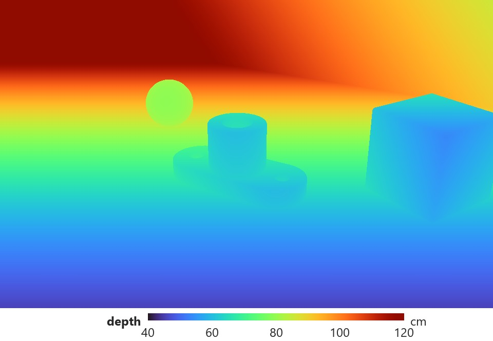
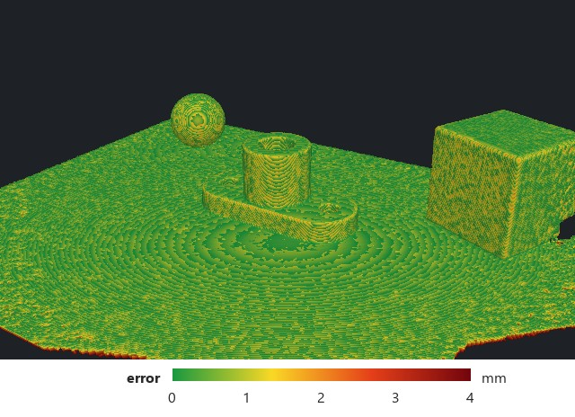
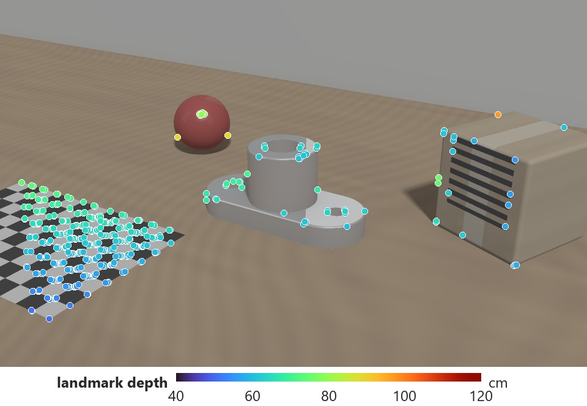
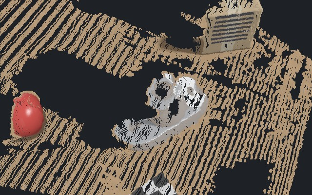
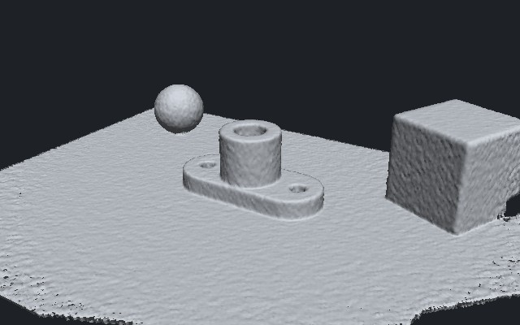
| representation | measure dimensions | plan / collide | render new views | memory |
|---|---|---|---|---|
| point cloud | roughly | with effort | poorly | moderate |
| mesh | yes | yes | yes (with textures) | small |
| occupancy / voxels | at grid resolution | yes | poorly | large (cubic) |
| SDF / TSDF | yes (zero level) | yes | via mesh | large, sparse helps |
| radiance field (NeRF) | indirectly | indirectly | yes | small (weights) |
| 3D Gaussians | with care | indirectly | yes, real time | large |
Choose by the downstream task. Conversions are possible (field → mesh, Gaussians → surface), but each one adds error.
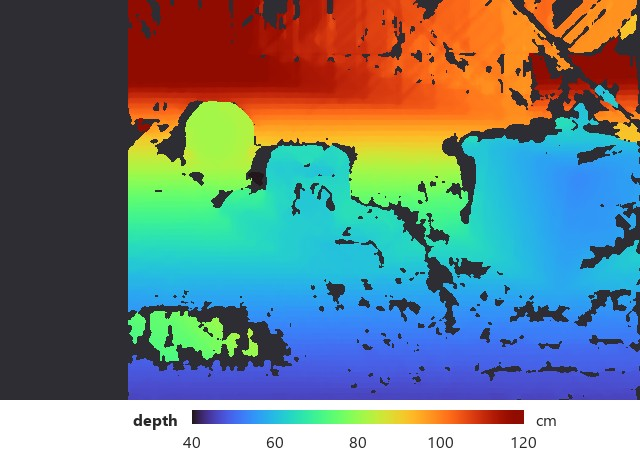
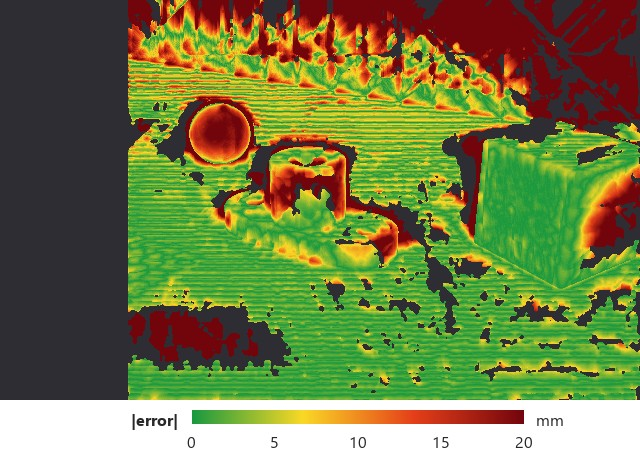
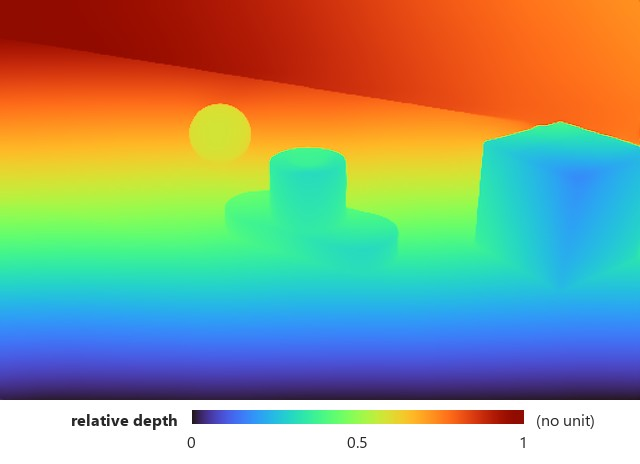
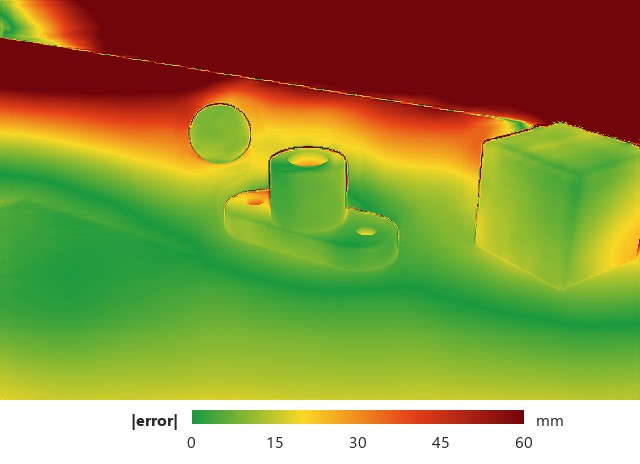
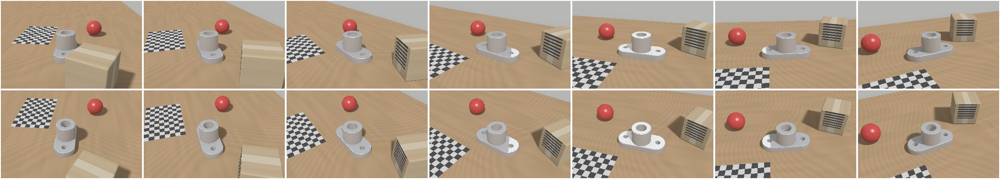
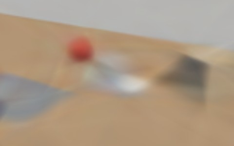
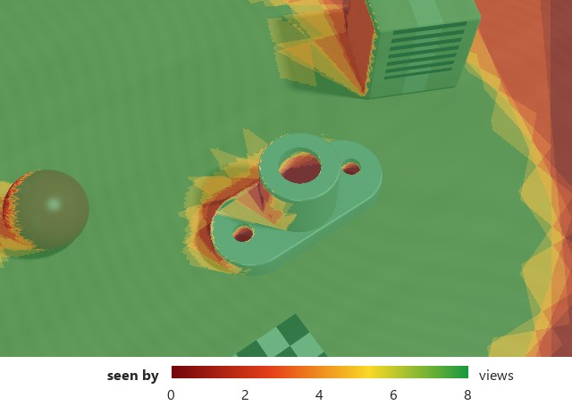
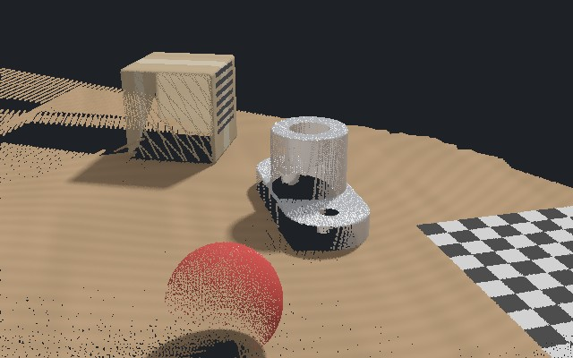
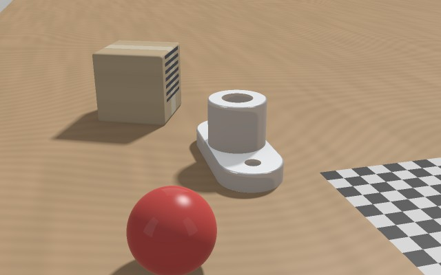
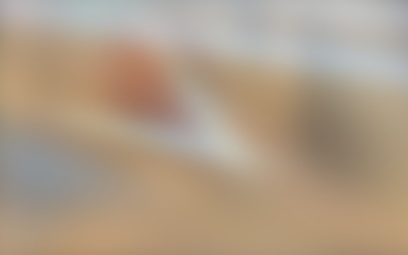
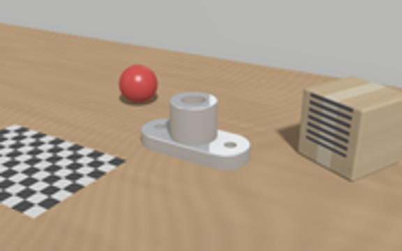
| NeRF (+ hash grids) | 3D Gaussian splatting | |
|---|---|---|
| scene stored as | network weights / feature grids | millions of explicit primitives |
| rendering | ray marching, many queries | rasterization, real time |
| memory | small | large (hundreds of MB) |
| editing | hard | easy: move, delete primitives |
| geometry | density threshold or SDF variant | needs surface-aligned variant |
| both | need calibrated, posed images and good coverage; optimize image agreement | |
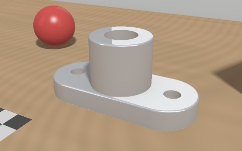
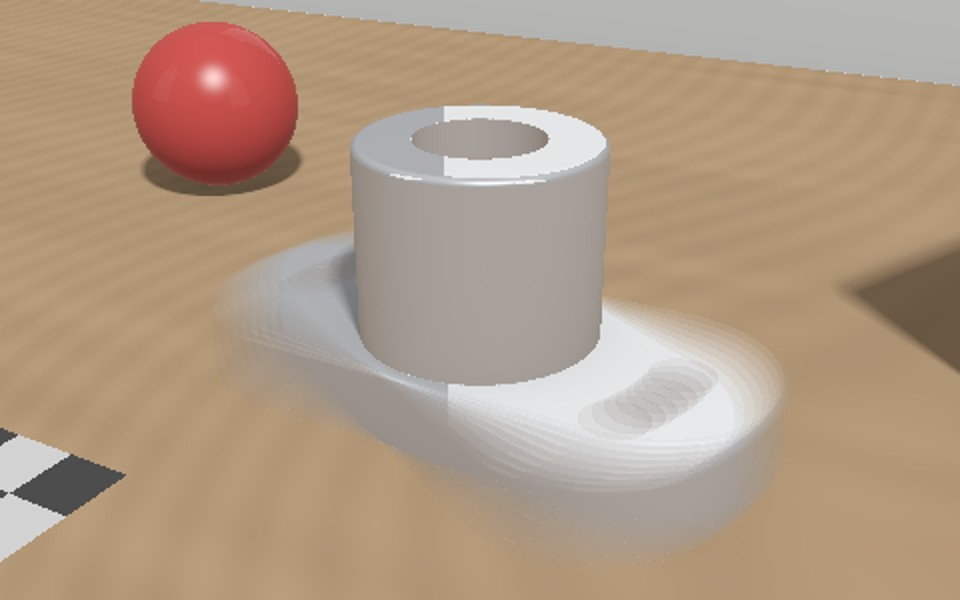
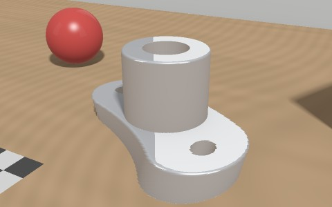
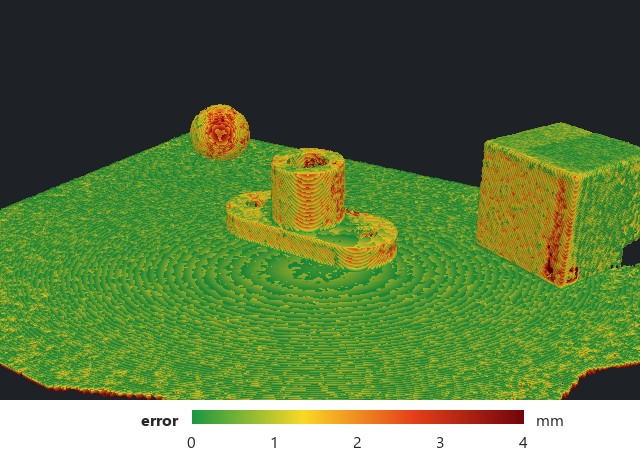